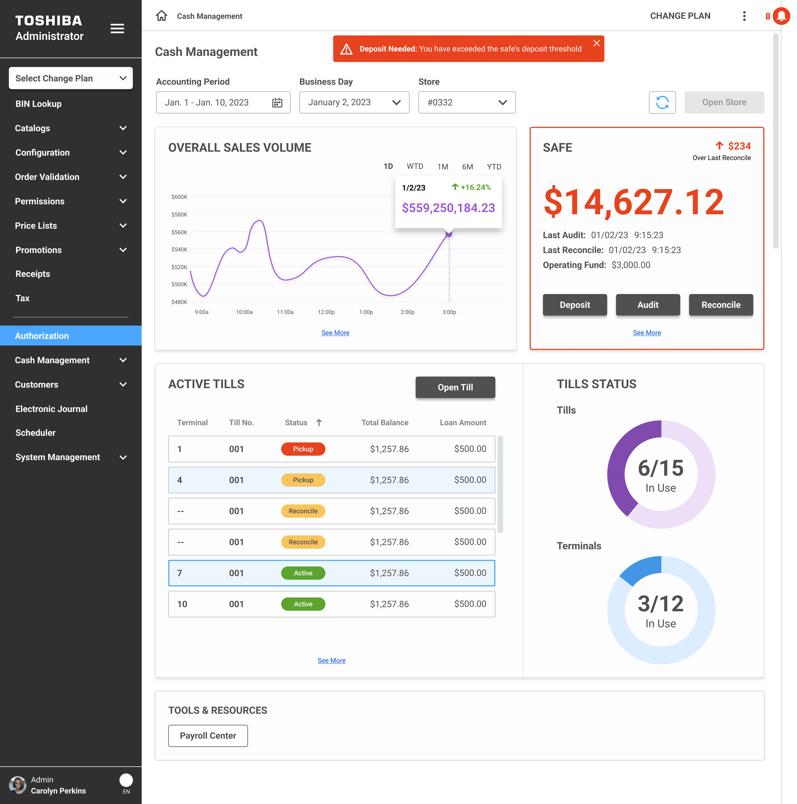

Enterprise Software
Security Suite — Loss Prevention Platform
Turning AI camera and hardware data into a reporting platform that helps retailers reduce shrink at self-checkout.

POS / Retail
Fuel POS Experience
Redesigning the gas station cashier touchscreen to reduce transaction time and pump errors.

Enterprise Software
Cash Management — Till & Safe Operations
Designing a centralized cash operations dashboard so store managers can track tills, audits, and safe balances without the guesswork.